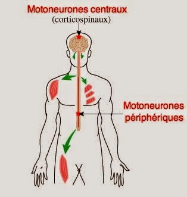

La sclerose en plaque
Definitions
Differentes formes
Signes cliniques
Examens complementaires
Traitements
Definitions
La
sclerose en plaque
La
sclerose en plaque (S.E.P.) est une maladie du systeme nerveux central
due e la destruction progressive de la gaine de myeline. Il se forme
des "plaques de demyelinisation" disseminees dans le systeme nerveux
central.
Le
ralentissement de l’influx nerveux de e ces lesions est responsable des
symptemes de la maladie.
La gaine de myeline
La gaine
de myeline est une gaine qui isole electriquement les axones
les uns des autres, mais accroet egalement la vitesse du transport
electrique. La gaine est composee d'un tres grand nombre de cellules,
dites cellules de Schwann, ne se touchant pas.
L'axone
est un prolongement cytoplasmique unique qui transmet l'influx nerveux
du
corps cellulaires vers l'extremite de l'arborisation. L'axone est
protege par la gaine de myeline.

Differentes
formes
- Forme remittente : Apparition
de un ou plusieurs symptemes qui disparaissent en 6-8 semaines sans
sequelles : evolution par poussees.
- Forme secondairement
progressive : succede e la forme remittente et se caracterise
par une progression continue du handicap : evolution par
poussees puis installation progressive.
- Forme primaire progressive :
forme d’emblee progressive oe les troubles s’aggravent lentement et
d’autres signes apparaissent au cours du tps : evolution
directement progressive, pas de poussees.
Signes
cliniques
- Poussee : periode de survenue
ou d’aggravation de signes neurologique pendant plus de 24h et separee
de la derniere poussee d’au moins 1 mois et en dehors d’un episode
infectieux.
- Fatigue : recuperer au mieux,
fractionner les activites, faire des pauses.
- Trouble moteur : souvent aux
membres inferieurs, faiblesse musculaire, tremblement, ataxie.
- Spasticite : raideur des
membres avec parfois spasmes, contracture, secousse, douleur.
- Trouble sensitif :
fourmillement, engourdissement, peau cartonnee, baisse de la
sensibilite.
- Trouble de l’equilibre :
- Trouble cerebelleux : vertige,
perte d’equilibre, sensation ebrieuse.
- Trouble de la coordination des
mouvements.
- Trouble vestibulaire : vertige,
nystagmus.
- Trouble visuel : nevrite
optique retrobulbaire, baisse acuite visuel, diplopie, daltonisme.
- Trouble urinaire : imperiosite
mictionnelle, pollakiurie, retention urinaire.
- Trouble sexuel : baisse de la
libido, trouble de l’erection, trouble de la sensibilite genitale.
- Trouble psychique et cognitif :
trouble de l’humeur, angoisse, anxiete, trouble memoire, difficulte de
concentration.
- Trouble du langage :
dysarthrie, dysphonie.
- Trouble de la deglutition.
Examens
complementaires
- Ponction lombaire : recherche
des anomalies caracteristiques.
- IRM cerebrale : permet de
visualiser les plaques de demyelinisation.
Traitements
- Traitement de la poussee :
limiter la duree et l’intensite de la poussee.
- Corticoede : risque de trouble
du rythme, insomnie, hyperglycemie, hypokaliemie, retention
hydro-sodee, flush, cephalee, goet metallique dans la bouche.
- Traitement de fond : ralentir
l’evolution naturelle de la maladie : diminuer la frequence
des poussees et freiner la progressions de l’handicap.
- Interferon :
immunomodulateur : risque de syndrome pseudo-grippal.
- Immunosupresseur : risque
d’aplasie medullaire, trouble digestif, trouble cardiaque, reaction
cutanee.
Voir aussi :

 haut
de page
haut
de page